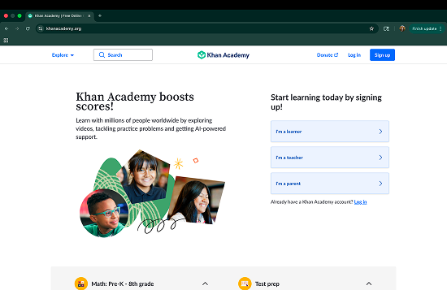
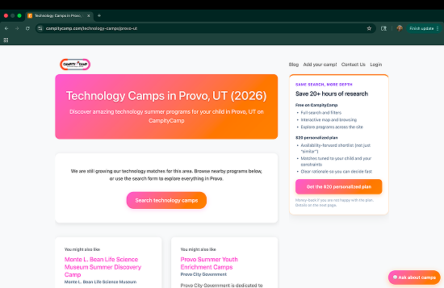
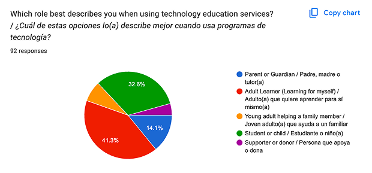
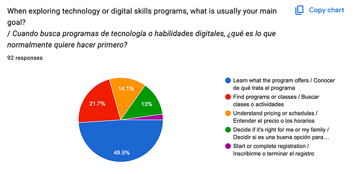
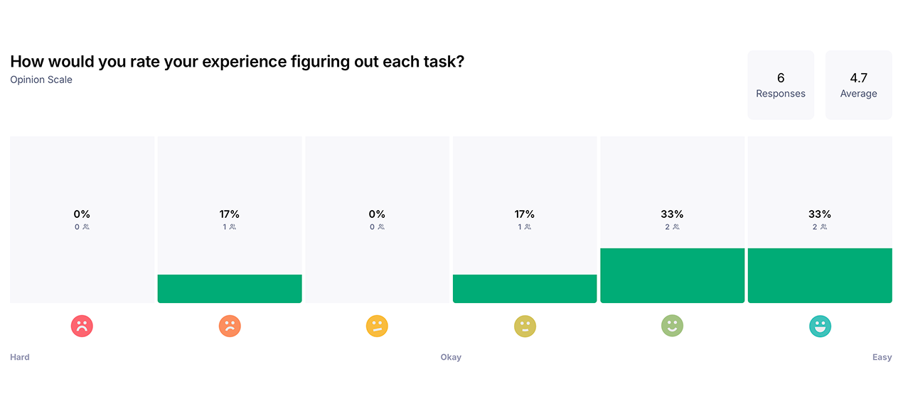

Club Ability
Designing a More Professional First Impression
Club Ability is a bilingual STEM and digital-skills organization serving diverse communities. As programs expanded across age groups, the CEO wanted the website to shift from a kid-centered feel to a more professional, community-centered experience. My goal was to make the site more clear, more organized, and easier to navigate for users with different needs, goals, and ages. My team and I used personas, journey mapping, market research, and usability testing with eye tracking to identify friction points. The final prototype improved navigation clarity, visual balance, and pathway guidance, then was handed off after stakeholder review.
Preview
Compare the original site with the redesigned direction. Drag the slider or use the control to explore both.
Research findings and annotated notes will be expanded here once the narrative and metrics are finalized.
The Problem
The original site had strong mission content, but users found the navigation and overall flow unclear and unorganized. Visitors struggled to quickly understand who programs were for, where to start, and what action to take next. The visual tone also leaned too kid-focused in places, making it harder to communicate a professional, community-wide offering.
This understanding led us to develop the following overall problem statement:
How can we preserve warmth while creating clearer pathways and stronger credibility for all ages along with an overall community feel?
User Journey
I created personas, including Carlos, to map how users moved from their first visit to action. In the current journey, users landed with interest but lacked immediate orientation, then encountered unclear navigation and inconsistent page flow. Decision points were weak: users were unsure which program path matched their age, goals, or needs. This uncertainty caused hesitation before enrollment or contact. Journey mapping revealed that the core issue was not lack of content, but lack of structure. My team & I needed a pathway-first experience that helps users quickly self-identify and move forward with confidence.

Competitive Analysis
Alongside site-mapping, I did market research on what solutions to these issues currently existed. Club Ability's site already had valuable assets like program information, testimonials, sponsor visibility, and bilingual mission messaging; however, these elements were spread across pages without a consistent hierarchy or predictable user flow. Important information existed, but users had to work too hard to find it. The redesign focused on reorganizing what was already strong into a clearer system that supports user decision-making from entry to action and much of this was based on research on what was currently available in this space.


User Testing
After the analysis on other companies, my team & I decided to conduct various user testing. The first was survey based where valuable light was shed on certain topics such as the typical age in this demographic looking for education services surrounding technology as well as the typical goal of these users when seeking out deeper knowledge in this area.


From there, we brought in three individuals that were within the scope of the target market and conduct eye tracking testing surrounding the current site where we had them complete the following tasks:
- Explore the site to understand what it's for
- Act as a parent interested in signing up their child for a course and to navigate accordingly
- Act as an adult wanting to sign up yourself and navigate accordingly
Each of these participants had struggles with the current site for reasons surrounding how clear the purpose of the company was as well as general information on course specifics. This testing helped us hone in on some of the biggest problems to move forward in solving.
Iterations
Based on research findings, I moved through fast iteration cycles. I started with whiteboard sketches to explore structure and simplify pathways. Next, I built wireframes to test navigation clarity and content hierarchy. I also used Figma Make to expand ideation and compare layout directions. After cycling through multiple iterations with my team, we selected a final direction and refined it to ensure it was centered in solving the core problem statement. Key improvements included cleaning up navigation, reducing harsh color usage, and creating clearer routes for users based on wants, needs, and age. Throughout refinement, we balanced professional tone with accessibility and community warmth to keep the brand approachable.
Based on the testing period of this process, I found the biggest pain points were the navigation, the overall flow of the site, and the look and feel of the aesthetic. With this in mind, I made the following implementations in order to address the concerns that were discovered:
-
Navigation
- Simple and clear, a little more minimalistic
-
Flow of the site
- Courses immediately available for the user to see and understand as well as appropriate visuals that properly show preview what the course entails
-
Look & Feel
- Kept the same light pink and light blue colors as before; however, they were merely accents rather than being overly prevalent to help with the 'kid only' feel to the original website.
Prototype
The high-fidelity prototype translated my research into a clearer, more intentional experience. It introduced stronger information hierarchy, cleaner navigation, and clearer call-to-action placement. The design gave users faster orientation and more confidence in where to go next.
Add data-embed-desktop and
data-embed-mobile on the
prototype block with your Figma embed URLs.
Usability Testing & Validation
My team and I conducted further usability testing through Maze to validate whether users could find and follow key pathways. Testing focused on first-click behavior, navigation discoverability, and the visibility of key actions. Eye-tracking patterns showed that users previously spent too much time scanning without clear direction, especially around navigation and decision points. These insights helped us reorganize hierarchy and improve visual emphasis for primary routes.

The testing we conducted showed an overall increase in satisfaction; however, comments that were left definitely helped us to understand improvements that my team and I need to make in the future.
Project Retrospective
Thorough target-market research gave this project direction and helped me focus on real pain points rather than assumptions. Persona development, journey mapping, and testing created a clear framework for design decisions. CEO check-ins kept the solution aligned with organizational goals, and iterative prototyping helped the team converge efficiently. Due to the nature of this class, once we ran out of overall time for the company, this is where the work of myself and my team ended, so we developed a functioning prototype and a detailed hand-off document for the next team to come in and further our designs.
If I repeated this project, I would strengthen user research further by expanding participant diversity, running additional testing rounds earlier, and defining measurement metrics sooner. That would improve validation depth and post-launch impact tracking.
This project reinforced the value of structured UX process at every stage. Given more time, I would have expanded participant diversity in testing and established success metrics earlier to better validate outcomes post-handoff.